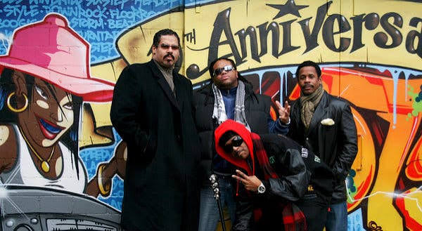
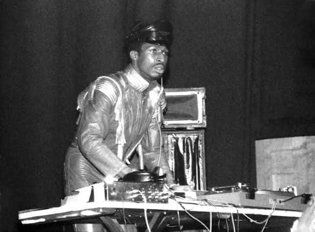
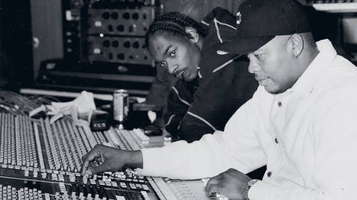

The story so far
Hip hop and vinyl grew up together. Here is how it happened...
It started with a simple loop
In 1973, DJ Kool Herc played two copies of the same record at a party in the Bronx. He looped the drum break so the dancers could keep going. That trick is where hip hop began.
Rap reaches the radio

In 1979, the Sugarhill Gang released Rapper's Delight, one of the first rap records to reach a wide audience.
The Hip-Hop technique becomes refined

In the early 1980s, Grandmaster Flash showed how a DJ could cut, mix and scratch records like an instrument.
Sampling and crate digging

By the late 1980s, samplers let producers build tracks from slices of old vinyl. That sent them to record shops to dig through crates for the next great sound, and collectors still do the same today.